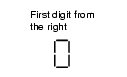
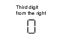
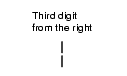

Instrument cluster input/output check mode
Check Code Table
- • Check codes which are not listed may be indicated, but they cannot be inspected.
- • The check codes are displayed in numerical order. (While performing the inspection, if you want to inspect a check code with a number smaller than the code number you are currently inspecting, terminate the check mode then repeat the inspection from the beginning.)
- • If a speed signal is input to the instrument cluster (the wheels are rotated) while a code other than check code 50 or 51 is displayed, the input/output check mode will be cancelled.
- • The check codes can be fast-forwarded by pushing and holding the odometer/tripmeter switch for 1 s or more.

Checking Order
Check Code Inspection
Check code 01
Check code 04
Check code 08
Check code 12
Check code 13
Check code 14
Check code 16
Check code 22
Check code 23
Check code 25
Check code 26
Check code 31
Check code 59
Diagnostic procedure
|
STEP
|
INSPECTION
|
INDICATION
|
ACTION
|
|---|---|---|---|
|
1
|
The three digits number is indicated after selecting check code 59. Confirm the first digit from the right.
|
 |
The CAN system is okay.
Go to next step.
|
|
|
The DTC of CAN system is detected.
Perform the DTC inspection. (See DTC TABLE [MULTIPLEX COMMUNICATION SYSTEM])
• If the CAN system is okay, replace the instrument cluster.
Go to next step.
|
||
|
2
|
Confirm the second digit from the right.
|
|
The wiring harnesses between the fuel gauge sender unit and instrument cluster are okay.
Go to next step.
|
|
|
Inspect following parts.
• Fuel gauge sender unit
• Wiring harness (Fuel gauge sender unit-instrument cluster)
|
||
|
3
|
Confirm the third digit from the right.
|
 |
The fuel pulse signal from the PCM is okay.
|
|
 |
Inspect the PCM.
(See DTC TABLE [ZY], PCM INSPECTION [ZY].)
• If the PCM is okay, replace the instrument cluster.
|